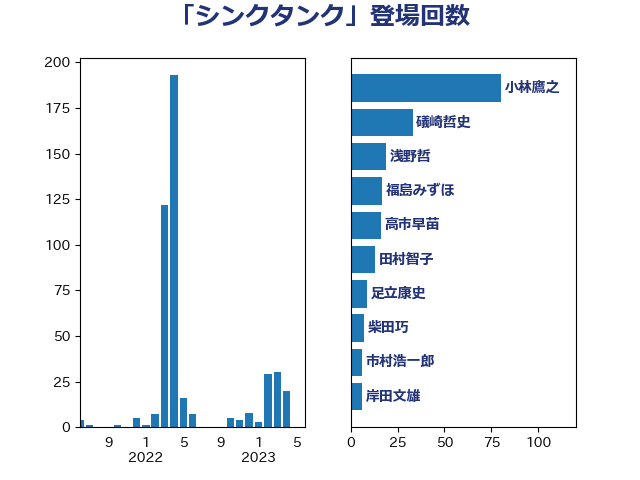

単語「シンクタンク」

| 小林鷹之 | 自由民主党 | 80 回 |
| 礒崎哲史 | 国民民主党 | 33 回 |
| 浅野哲 | 国民民主党 | 19 回 |
| 福島みずほ | 社会民主党 | 17 回 |
| 高市早苗 | 自由民主党 | 16 回 |
| 田村智子 | 日本共産党 | 13 回 |
| 足立康史 | 日本維新の会 | 9 回 |
| 柴田巧 | 日本維新の会 | 7 回 |
| 市村浩一郎 | 日本維新の会 | 6 回 |
| 岸田文雄 | 自由民主党 | 6 回 |
| 大島敦 | 立憲民主党 | 6 回 |
| 三浦信祐 | 公明党 | 6 回 |
| 石原宏高 | 自由民主党 | 5 回 |
| 芳賀道也 | 国民民主党 | 4 回 |
| 新垣邦男 | 立憲民主党 | 4 回 |
| 高木啓 | 自由民主党 | 3 回 |
| 阿部司 | 日本維新の会 | 3 回 |
| 鈴木義弘 | 国民民主党 | 3 回 |
| 舩後靖彦 | れいわ新選組 | 3 回 |
| 玉木雄一郎 | 国民民主党 | 3 回 |
| 櫻井周 | 立憲民主党 | 3 回 |
| 杉尾秀哉 | 立憲民主党 | 3 回 |
| 山添拓 | 日本共産党 | 3 回 |
| 山下芳生 | 日本共産党 | 3 回 |
| 小山展弘 | 立憲民主党 | 3 回 |
| 安江伸夫 | 公明党 | 3 回 |
| 大野敬太郎 | 自由民主党 | 3 回 |
| 原口一博 | 立憲民主党 | 3 回 |
| 前原誠司 | 国民民主党 | 3 回 |
| 羽田次郎 | 立憲民主党 | 2 回 |
| 篠原豪 | 立憲民主党 | 2 回 |
| 福島伸享 | 無所属 | 2 回 |
| 片山大介 | 日本維新の会 | 2 回 |
| 浜口誠 | 国民民主党 | 2 回 |
| 松川るい | 自由民主党 | 2 回 |
| 杉田水脈 | 自由民主党 | 2 回 |
| 本庄知史 | 立憲民主党 | 2 回 |
| 川田龍平 | 立憲民主党 | 2 回 |
| 岩谷良平 | 日本維新の会 | 2 回 |
| 太田房江 | 自由民主党 | 2 回 |
| 和田有一朗 | 日本維新の会 | 2 回 |
| 伊波洋一 | 無所属 | 2 回 |
| 井上哲士 | 日本共産党 | 2 回 |
| ながえ孝子 | 無所属 | 2 回 |
| 音喜多駿 | 日本維新の会 | 1 回 |
| 青柳仁士 | 日本維新の会 | 1 回 |
| 青山繁晴 | 自由民主党 | 1 回 |
| 長友慎治 | 国民民主党 | 1 回 |
| 鈴木敦 | 国民民主党 | 1 回 |
| 鈴木庸介 | 立憲民主党 | 1 回 |
| 西村康稔 | 自由民主党 | 1 回 |
| 落合貴之 | 立憲民主党 | 1 回 |
| 磯崎仁彦 | 自由民主党 | 1 回 |
| 石破茂 | 自由民主党 | 1 回 |
| 石井章 | 日本維新の会 | 1 回 |
| 田村貴昭 | 日本共産党 | 1 回 |
| 田島麻衣子 | 立憲民主党 | 1 回 |
| 渡辺周 | 立憲民主党 | 1 回 |
| 清水貴之 | 日本維新の会 | 1 回 |
| 浜田聡 | NHK党 | 1 回 |
| 泉健太 | 立憲民主党 | 1 回 |
| 水岡俊一 | 立憲民主党 | 1 回 |
| 櫛渕万里 | れいわ新選組 | 1 回 |
| 枝野幸男 | 立憲民主党 | 1 回 |
| 松原仁 | 立憲民主党 | 1 回 |
| 末松信介 | 自由民主党 | 1 回 |
| 早稲田ゆき | 立憲民主党 | 1 回 |
| 徳永久志 | 立憲民主党 | 1 回 |
| 平将明 | 自由民主党 | 1 回 |
| 岬麻紀 | 日本維新の会 | 1 回 |
| 山岸一生 | 立憲民主党 | 1 回 |
| 小田原潔 | 自由民主党 | 1 回 |
| 大島九州男 | れいわ新選組 | 1 回 |
| 塩田博昭 | 公明党 | 1 回 |
| 堀場幸子 | 日本維新の会 | 1 回 |
| 國重徹 | 公明党 | 1 回 |
| 吉川元 | 立憲民主党 | 1 回 |
| 伊藤孝恵 | 国民民主党 | 1 回 |
| 伊藤俊輔 | 立憲民主党 | 1 回 |
| 仁木博文 | 無所属 | 1 回 |
| 中川郁子 | 自由民主党 | 1 回 |
| 中山展宏 | 自由民主党 | 1 回 |
| 世耕弘成 | 自由民主党 | 1 回 |
| 一谷勇一郎 | 日本維新の会 | 1 回 |